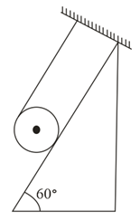
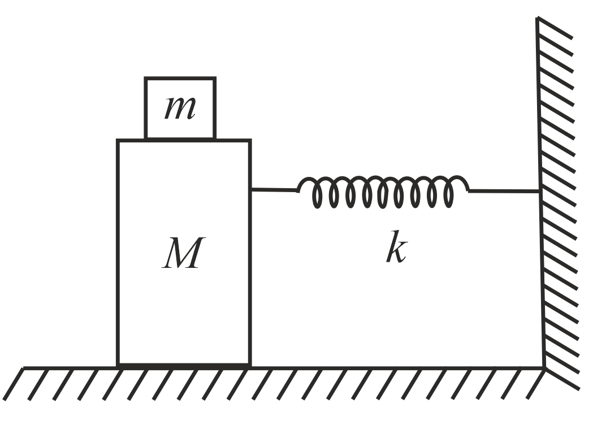
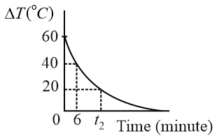

Filter questions
Q1
PHY-2021-0101-S2-Q006
2021 | 18 Mar | Shift 2
—
MCQ
A solid cylinder of mass is wrapped with an inextensible light string and, is placed on a rough inclined plane m as shown in the figure. The frictional force acting between the cylinder and the inclined plane is: [The coefficient of static friction,, is 0.4 ] μs

Answer: C
Q2
PHY-2021-0101-S1-Q003
2021 | 20 Jul | Shift 1
—
MCQ
The normal reaction N for a vehicle of 800 kg mass, negotiating a turn on a 30° banked road at maximum possible speed without skidding is ____ ×103 kg m s−2.
Answer: A
Q3
PHY-2021-0101-S1-Q024
2021 | 20 Jul | Shift 1
—
Integer
A circular disc reaches from top to bottom of an inclined plane of length L. When it slips down the plane, it takes time t1. When it rolls down the plane, it takes time t2. The value of t2 is √3. The value of x will be t1 x
Answer: 2
Q4
PHY-2021-0101-S1-Q011
2021 | 24 Feb | Shift 1
—
MCQ
In the given figure, a mass M is attached to a horizontal spring which is fixed on one side to a rigid support. The spring constant of the spring is k. The mass oscillates on a frictionless surface with time period T and amplitude A. When the mass is in equilibrium position, as shown in the figure, another mass m is gently fixed upon it. The new amplitude of oscillation will be:

Answer: D
Q5
PHY-2021-0101-S2-Q007
2021 | 24 Feb | Shift 2
—
MCQ
In the given figure, a body of mass M is held between two massless springs, on a smooth inclined plane. The free ends of the springs are attached to firm supports. If each spring has spring constant k, the frequency of oscillation of given body is:
Answer: D
Q6
PHY-2021-0101-S2-Q005
2021 | 27 Aug | Shift 2
—
MCQ
The boxes of masses 2 kg and 8 kg are connected by a massless string passing over smooth pulleys. Calculate the time taken by box of mass 8 kg to strike the ground starting from rest. (g = 10 m s−2)
Answer: D
Q7
PHY-2022-0101-S1-Q005
2022 | 24 Jun | Shift 1
—
MCQ
A particle experiences a variable force F = (4xˆi + 3y2ˆj) in a horizontal x −y plane. Assume distance in meters and force is newton. If the particle moves from point (1, 2) to point (2, 3) in the x −y plane, then Kinetic Energy changes by:
Answer: A
Q8
PHY-2022-0101-S2-Q011
2022 | 24 Jun | Shift 2
—
MCQ
Two identical charged particles each having a mass 10 g and charge 2.0 × 10−7C are placed on a horizontal table with a separation of L between them such that they stay in limited equilibrium. If the coefficient of friction between each particle and the table is 0.25, find the value of L. [Use g = 10 ms−2 ]
Answer: A
Q9
PHY-2022-0101-S2-Q022
2022 | 24 Jun | Shift 2
—
Integer
In an experiment to verify Newton's law of cooling. a graph is plotted between. the temperature difference (ΔT) of the water and surroundings and time as shown in figure. The initial temperature of water is taken as. The value of as mentioned in the graph will be 80°C t2 Q

Answer: 16
Q10
PHY-2022-0101-S2-Q006
2022 | 25 Jun | Shift 2
—
MCQ
A copper block of mass 5.0 kg is heated to a temperature of 500°C and is placed on a large ice block. What is the maximum amount of ice that can melt? [Specific heat of copper: 0.39Jg-1∘C−1 and latent heat of fusion of water: 335 Jg−1]
Answer: C
Q11
PHY-2022-0101-S2-Q023
2022 | 25 Jun | Shift 2
—
Integer
A block of mass 200 g is kept stationary on a smooth inclined plane by applying a minimum horizontal force F= √x N as shown in figure. The value of x= _____.

Answer: 12
Q12
PHY-2022-0101-S2-Q022
2022 | 27 Jun | Shift 2
—
Integer
A rolling wheel of 12 kg is on an inclined plane at position P and connected to a mass of 3 kg through a string of fixed length and pulley as shown in figure. Consider PR as friction free surface. The velocity of centre of mass of the wheel when it reaches at the bottom Q of the inclined plane PQ will be 1 √xgh m s−1. The value of (rounded off to the nearest integer) is _____. 2 x
Answer: 3
Q13
PHY-2022-0101-S1-Q021
2022 | 28 Jun | Shift 1
—
Integer
A hanging mass M is connected to a four times bigger mass by using a string pulley arrangement, as shown in the figure. The bigger mass is placed on a horizontal ice-slab and being pulled by 2 Mg force. In this situation, tension in the string is x Mg for x = _____. Neglect mass of the string and friction of the block (bigger mass) 5 with ice slab. (Given g = acceleration due to gravity)
Answer: 6
Q14
PHY-2022-0101-S2-Q003
2022 | 29 Jun | Shift 2
—
MCQ
A block of mass 40 kg slides over a surface, when a mass of 4 kg is suspended through an inextensible massless string passing over frictionless pulley as shown below. The coefficient of kinetic friction between the surface and block is 0.02. The acceleration of block is: (Given g = 10 m s−2.) 8 s−2 s−2
Answer: A
Q15
PHY-2022-0101-S2-Q005
2022 | 29 Jun | Shift 2
—
MCQ
In the given figure, the block of mass m is dropped from the point ′A′. The expression for kinetic energy of block when it reaches point is ′B′
Answer: A
Q16
PHY-2023-0101-S2-Q009
2023 | 06 Apr | Shift 2
—
MCQ
A metal block of mass is suspended from a rigid support through a metal wire of diameter. The m 14 mm tensile stress developed in the wire under equilibrium state is 7 × 105 N m–2. The value of mass m is ______ kg. (Take g = 9.8 m s−2 and π = 22 ) 7

Answer: D
Q17
PHY-2023-0101-S2-Q024
2023 | 10 Apr | Shift 2
—
Integer
A rectangular block of mass 5 kg attached to a horizontal spiral spring executes simple harmonic motion of amplitude 1 m and time period 3.14 s. The maximum force exerted by spring on block is ___ N.

Answer: 20
Q18
PHY-2023-0101-S1-Q026
2023 | 11 Apr | Shift 1
—
Integer
As shown in the figure, a configuration of two equal point charges q0 = + 2μC is placed on an inclined plane. Mass of each point charge is 20 g. Assume that there is no friction between charge and plane. For the system of two point charges to be in equilibrium (at rest) the height 10−3 m. The value of is h= x× x Take 1 = 9 × 109 N m2 C−2, g= 10 m s−2 4πε0

Answer: 300
Q19
PHY-2023-0101-S1-Q021
2023 | 15 Apr | Shift 1
—
Integer
A block of mass 10 kg is moving along x -axis under the action of force F = 5x N. The work done by the force in moving the block from x = 2 m to 4 m will be _______ J.
Answer: 30
Q20
PHY-2023-0101-S1-Q003
2023 | 24 Jan | Shift 1
—
MCQ
As per given figure, a weightless pulley P is attached on a double inclined frictionless surface. The tension in the string (massless) will be (if g= 10 m s−2)

Answer: B
Q21
PHY-2023-0101-S1-Q025
2023 | 24 Jan | Shift 1
—
Integer
A block of mass 2 kg is attached with two identical springs of spring constant 20 N m−1 each. The block is placed on a frictionless surface and the ends of the springs are attached to rigid supports (see figure). When the mass is displaced from its equilibrium position, it executes a simple harmonic motion. The time period of π oscillation is in SI unit. The value of X is______. √X q

Answer: 5
Q22
PHY-2023-0101-S1-Q003
2023 | 31 Jan | Shift 1
—
MCQ
As shown in figure, a 70 kg garden roller is pushed with a force of 200 N at an angle of 30° with horizontal. The normal reaction on the roller is (Given s−2) g= 10 m
Answer: C
Q23
PHY-2024-0101-S1-Q004
2024 | 01 Feb | Shift 1
—
MCQ
Consider a block and trolley system as shown in figure. If the coefficient of kinetic friction between the trolley and the surface is 0.04, the acceleration of the system in m s−2 is: (Consider that the string is massless and unstretchable and the pulley is also massless and frictionless):

Answer: C
Q24
PHY-2024-0101-S2-Q005
2024 | 08 Apr | Shift 2
—
MCQ
A block is simply released from the top of an inclined plane as shown in the figure above. The maximum compression in the spring when the block hits the spring is: √6 √5

Answer: D
Q25
PHY-2024-0101-S2-Q023
2024 | 09 Apr | Shift 2
—
Integer
A circular disc reaches from top to bottom of an inclined plane of length l. When it slips down the plane, if takes. When it rolls down the plane then it takes α )1/2t, where is _________ t s ( 2 s α
Answer: 3
Q26
PHY-2024-0101-S1-Q003
2024 | 30 Jan | Shift 1
—
MCQ
All surfaces shown in figure are assumed to be frictionless and the pulleys and the string are light. The acceleration of the block of mass 2 kg is:

Answer: B
Q27
PHY-2024-0101-S1-Q005
2024 | 31 Jan | Shift 1
—
MCQ
In the given arrangement of a doubly inclined plane two blocks of masses M and m are placed. The blocks are connected by a light string passing over an ideal pulley as shown. The coefficient of friction between the surface of the plane and the blocks is 0.25. The value of m, for which M= 10 kg will move down with an s−2, s−2 3 acceleration of 2 m is: (take g= 10 m and tan 37° = 4)

Answer: B